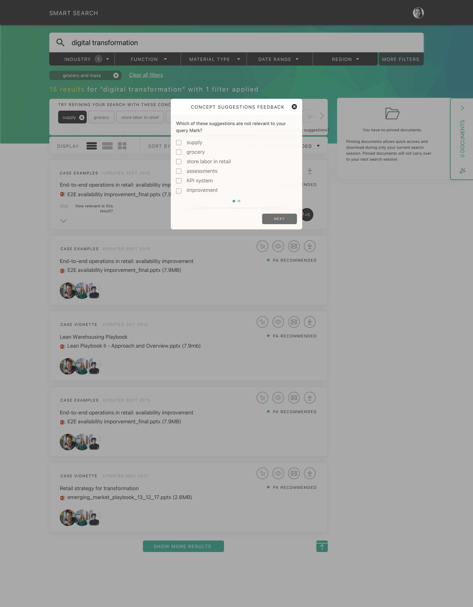
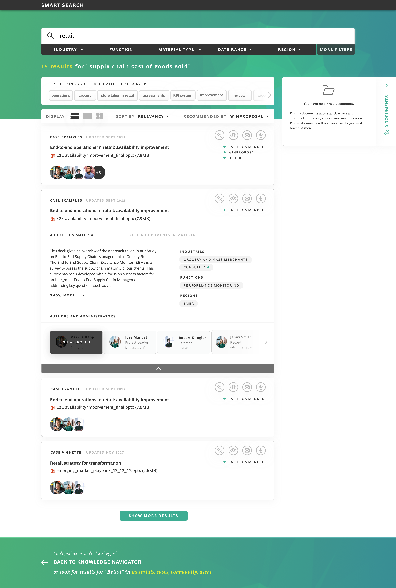
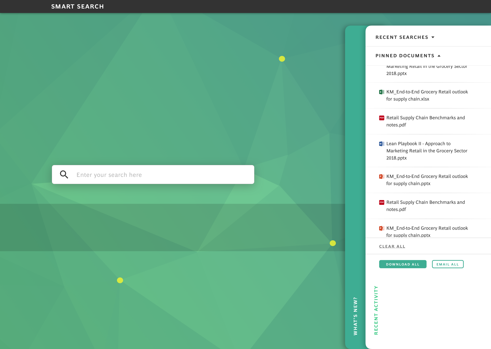
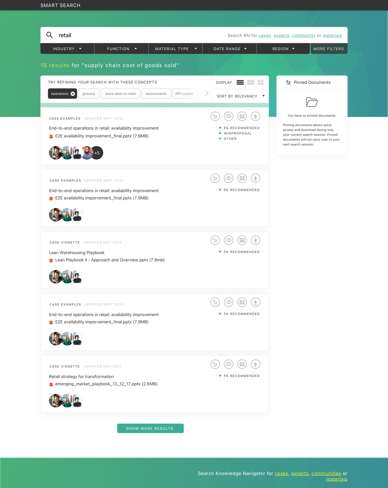
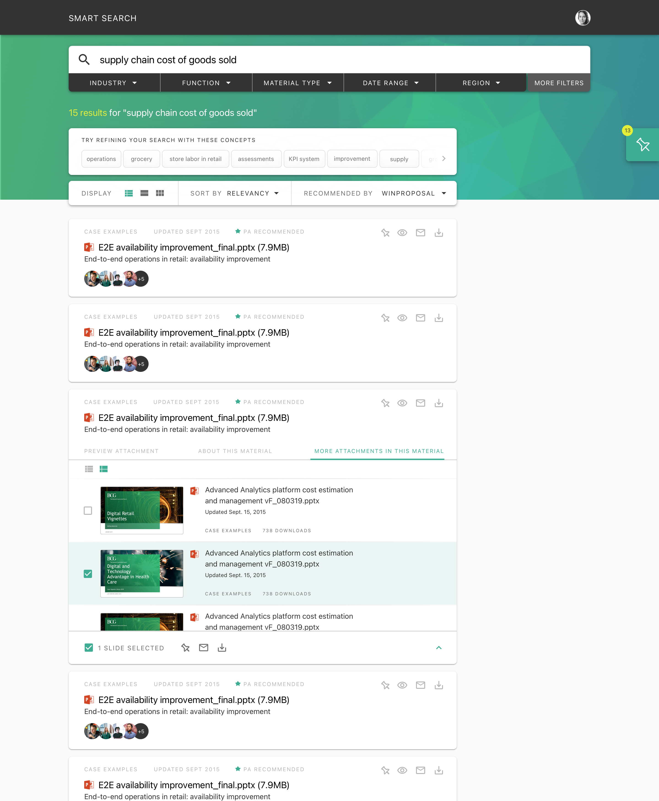
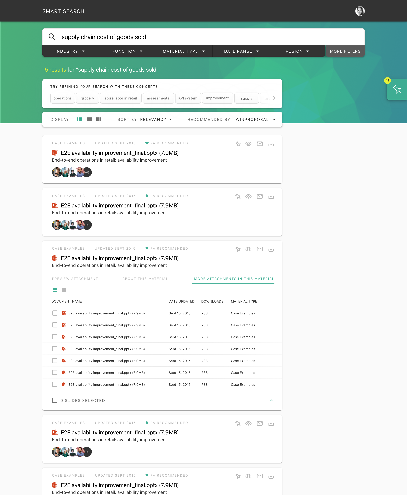

Scope & Collaboration
Project
Cross-functional Team
Context
The search platform consultants relied on daily had stopped earning their trust.
BCG's Smart Search is a mission-critical internal platform. Thousands of consultants depend on it to access case studies, reports, and institutional knowledge — the foundation of every client engagement.
Over time, the platform grew cluttered. Ranking logic returned irrelevant results. Filters were buried. The visual design no longer reflected BCG's premium brand. Consultants lost confidence in the tool and defaulted to workarounds — asking colleagues, digging through email, or relying on memory.
Opportunity
An outdated search tool was costing consultants their most valuable resource: time.
Consultants spent significant time sifting through irrelevant results — time that could be spent on client work. The platform lacked any mechanism to learn from user behavior, meaning the same poor results surfaced again and again.
This created a clear opportunity: redesign the platform as an intelligent knowledge system — one that surfaces trusted information quickly, adapts to individual workflows, and improves through continuous feedback.
Experience Architecture
Three interconnected systems. One intelligent platform.
The redesign was structured around three interdependent layers — each reinforcing the others to create a platform that compounds in value over time.
Layer 01
Relevance Engine
Improved ranking algorithms, concept suggestions, and advanced filtering to surface the right results — faster.
Layer 02
Personalization Layer
Personalized dashboards with recent activity, frequently accessed documents, and smart recommendations based on individual usage.
Layer 03
Feedback Loop
In-line tools for consultants to rate and flag results — micro-feedback that trains the system to improve continuously.
Product Design Decisions
The architecture set the structure. The UI had to make it feel effortless.
01 — Smart Filtering
Advanced filters that surface relevant results on the first try
Concept suggestions and sticky advanced filters replaced the buried, hard-to-find filtering system. Consultants could refine searches with fewer clicks, and the redesigned result previews displayed richer metadata — making it easy to assess relevance without opening every document.

Concept suggestions and smart filtering — refining searches with fewer interactions
02 — Streamlined Results
Clear visual hierarchy that makes dense information scannable
The cluttered, text-heavy results page was redesigned with a clean visual hierarchy. Improved ranking logic surfaced the most relevant documents first. Each result card displayed key metadata — document type, date, relevance indicators — allowing consultants to make faster decisions about what to read.

Rich metadata and improved ranking — consultants assess relevance at a glance
03 — Personalized Dashboard
A platform that adapts to how each consultant works
Consultants often repeated the same searches daily. Personalized dashboards with recent activity, frequently accessed documents, and smart recommendations eliminated redundant effort. The system learned from individual behavior, surfacing the right materials before consultants even searched.
Spotlight Feature
A system that improves because its users care enough to tell it how.
The previous platform had no mechanism for learning from its users. Search quality stagnated because there was no structured way to capture what was working and what wasn't.
The Continuous Feedback Loop changed that. Intuitive, in-line tools let consultants rate and flag search results in seconds — micro-feedback that requires almost no effort. This data feeds directly into the ranking system, creating a virtuous cycle: more usage produces better results, which drives more trust and more feedback.
Early rollout showed strong adoption. The system began producing measurably better results within weeks of launch — not because of algorithmic changes, but because consultants actively shaped the system's intelligence.
The Final Experience
A modern knowledge platform that consultants trust and enjoy using.
The finished platform spans intelligent search, personalized dashboards, and a self-improving feedback engine — all unified by a clean, modern interface that reflects BCG's premium brand.

Clean homepage — personalized recommendations and recent activity


Search results — clean hierarchy with rich metadata and document attachments

Document management — clear categorization and quick actions
Outcomes & Reflection
Measurable improvements across speed, relevance, and satisfaction.
search speed
Task-based testing showed significantly faster completion times across common search workflows.
relevance
Perceived relevance improved dramatically — more consultants found what they needed on the first try.
satisfaction
Consultants described the redesign as "more modern, clear, and professional" — trust in the tool was rebuilt.
Redesigning a dated internal tool isn't about making it look good. It's about rebuilding trust — reflecting the brand's quality in every interaction and delivering functional improvements that help people work smarter.
When consultants said the system "learns with me," the design succeeded — not because it looked better, but because it earned their confidence back.